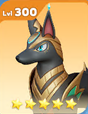

The Unbreakable Crusher
Statchew
(UR)Front Row - Tank/Debuff
 Barkplug
(UR)Front Row - DPS/Debuff
Barkplug
(UR)Front Row - DPS/Debuff Abuzzinian (UR)Back Row - Control
Abuzzinian (UR)Back Row - ControlLucidina
(UR)Back Row - Assassin
Fingenue
(SSR)Back Row - Immunity/Support
How it Works:
This is arguably the strongest, most well-rounded team in the game, combining impenetrable defense with overwhelming offense and control. Statchew's passive makes the entire front row incredibly durable. Barkplug's passive cripples the enemy team, amplifying all damage. Lucidina executes high-priority targets, while Abuzzinian locks down enemies with Paralysis.
Substitutions:
Statchew: Use Platyputz (SSR) for elite tanking.
Lucidina: Use Hoofrit (UR) for backline assassination or Snowkami (SSR) for single-target freeze.
 Snowkami
(SSR)
Snowkami
(SSR) Blazeal
(SSR)
Blazeal
(SSR) Axollium
(SSR)
Axollium
(SSR)